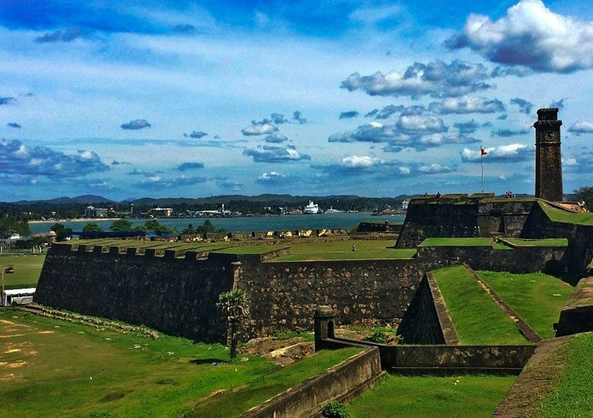
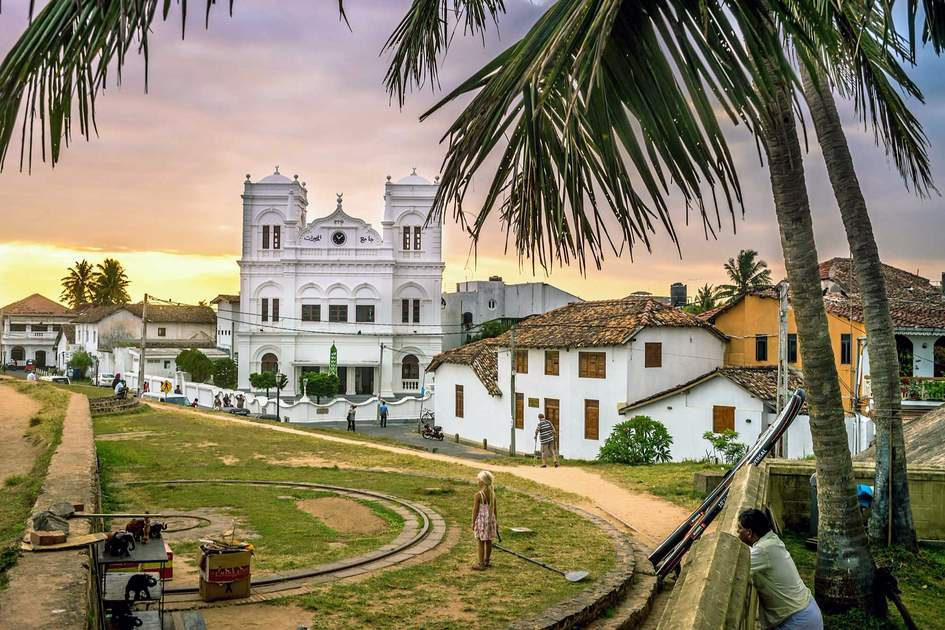
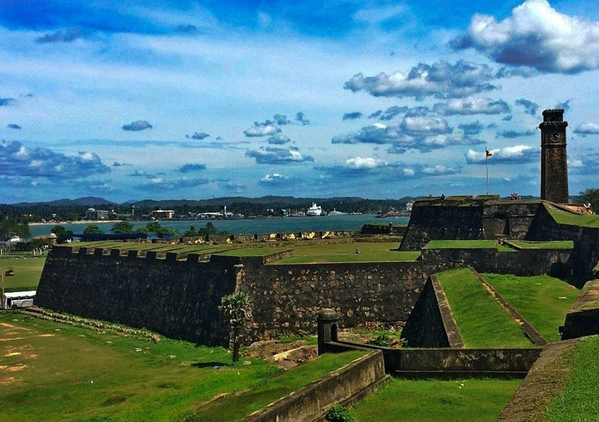
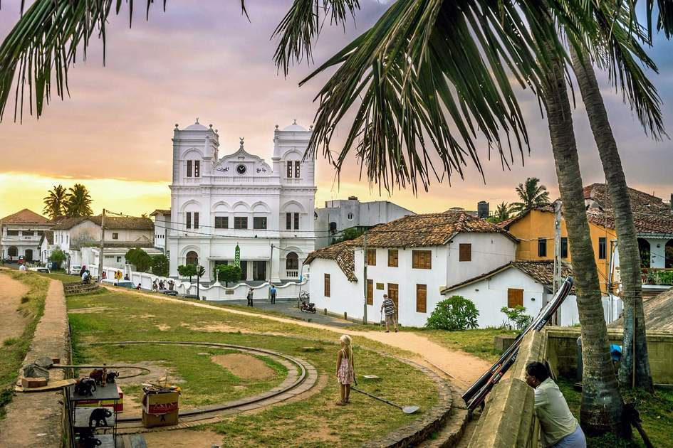

Galle Dutch Fort
Built several years ago on a massive piece of land in Galle, the Galle Dutch Fort was used by the Portuguese until the Dutch took over it.
The British finally sealed the fort as theirs with a lot of re-building and renovation.
The unique blends that led to the standing of this monumental structure are now listed under the UNESCO World Heritage Sites thus deserving a substantial place on the list of places to visit in Galle. The area is so beautiful, that is a favourite amongst couples for a pre-wedding shoot.
Location: Church Street, Bay of Galle
Timings: Open twenty-four hours
Entry Fee: Free
The unique blends that led to the standing of this monumental structure are now listed under the UNESCO World Heritage Sites thus deserving a substantial place on the list of places to visit in Galle. The area is so beautiful, that is a favourite amongst couples for a pre-wedding shoot.
Location: Church Street, Bay of Galle
Timings: Open twenty-four hours
Entry Fee: Free